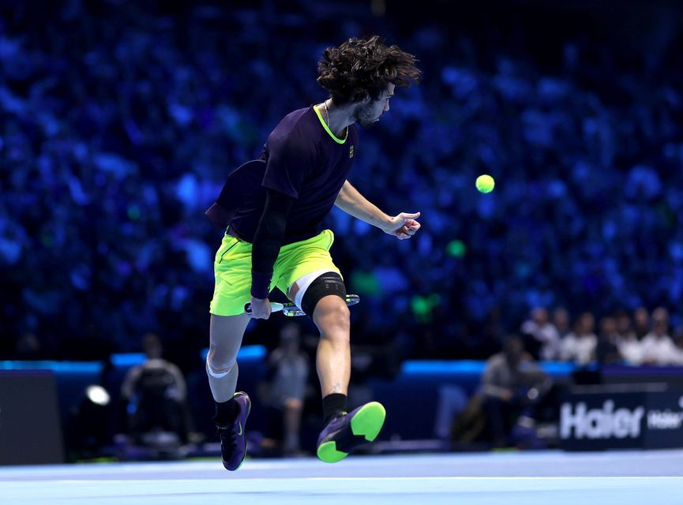

Alcaraz, un año de temor, autoconocimiento y éxito: “Hablaban, pero sabía que iba a ir genial”

El campeón reivindica a su nuevo equipo técnico y valora el aprendizaje a raíz de la lesión en la muñeca. Confirma que competirá con España en la Davis de Bolonia
“Tenía que ser él, tenía que ser él…”, dice emocionado Àlex Corretja a pie de pista, donde la vorágine lleva al protagonista de un lado para otro: fotos y más fotos con el equipo, con la familia, también con los amigos, con todo el ejército de allegados y con quien haga falta, que para eso es campeón y, por lo tanto, ya un señor maestro de 23 años. Exultante, Carlos Alcaraz (6-2 y 7-6(7) a Alexander Zverev) reparte abrazos entre los suyos mientras su preparador, Samuel López, comenta en la discreción lo difícil de un año que empezó con runrún, que continuó con la desgracia de la muñeca —baja e incertidumbre— y que se cierra al fin a lo grande, con dos éxitos extraordinarios en el palmarés:…
A pesar de los cuatro meses y medio que permaneció de baja, Alcaraz finalizará el año como el competidor más exitoso junto con Sinner, también lesionado. Ambos han logrado seis títulos en un año que, paradójicamente, apuntaba a ser un festín y en el que tan solo se han enfrentado una vez.
Fue en la final del Masters de Montecarlo. Poco después, el murciano se lastimó la muñeca en la arena del Godó y a su retorno estaba lejos, muy lejos del italiano en el ranking . Los 5.290 puntos de desventaja a finales de agosto han quedado reducidos a tan solo 350.